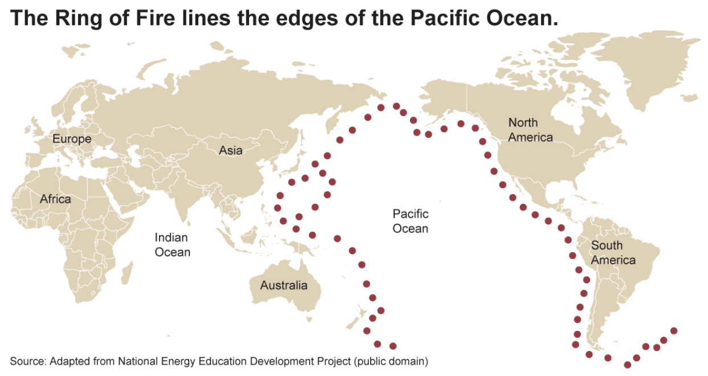
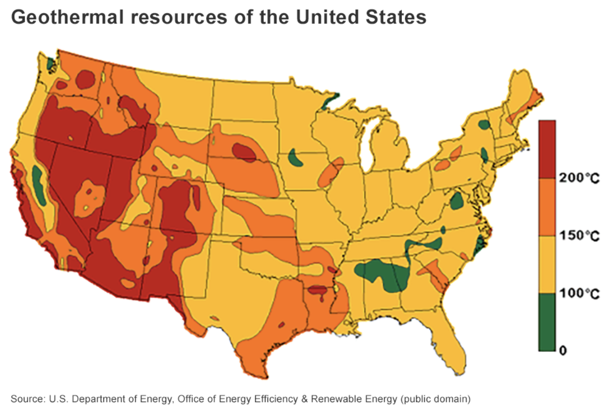

Next-generation geothermal power
The heat from the earth’s core and mantle could power all current human energy needs many times over. However, until now, economically viable access to that energy has been geographically limited. Geothermal energy has been most cost-effective in regions near the collision of tectonic plates, and in particular near the “ring of fire.” Within the U.S, this means geothermal energy resources are most concentrated in the western U.S., an area with less population and energy demand.
 Geothermal energy has the benefit of being a consistent and sometimes dispatchable power source, which means that it can help balance the grid in periods of low wind or low sunshine. However, it’s geographic limitations, both in the U.S. and globally, have limited its deployment
In the coming years, multiple advances appear poised to open up the potential for low-cost geothermal energy virtually anywhere on earth, including:
- 1. Enhanced geothermal. Using drilling and seismic fracture technology originally developed for fracking of oil and gas, enhanced geothermal (EGS) would allow for most cost effective geothermal power across large portions of the world.
- 2. Closed loop geothermal. Another approach is to use a “closed loop” geothermal approach. While traditional geothermal approaches use water to carry heat from deep below the earth to the powerplant, closed loop systems use other fluids which are more effective heat carriers, allowing them to be deployed virtually anywhere. Prime Movers Lab advisor Eli Dourado explains more in this blog.
- 3. Advanced drilling techniques. Finally, advances in drilling technology which could substantially lower the cost of drilling can reduce the cost of geothermal power across a wide range of geographies.
Combined, these approaches will enable next-generation geothermal power plants across large new areas of the planet at costs that compete with fossil fuels and complement wind and solar, providing the world with a new firm clean electricity resource.